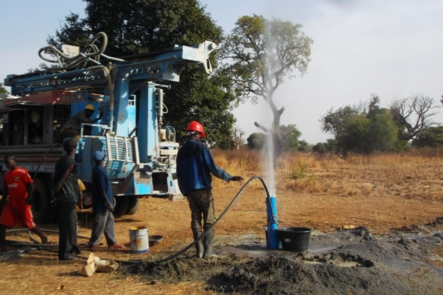
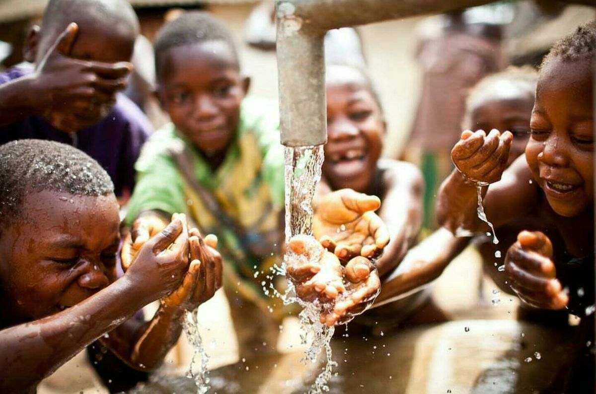
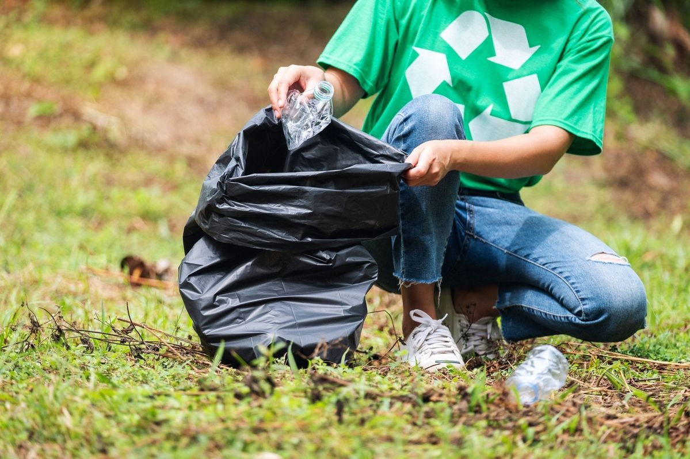
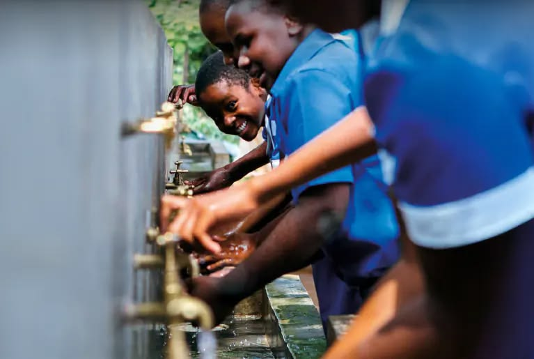
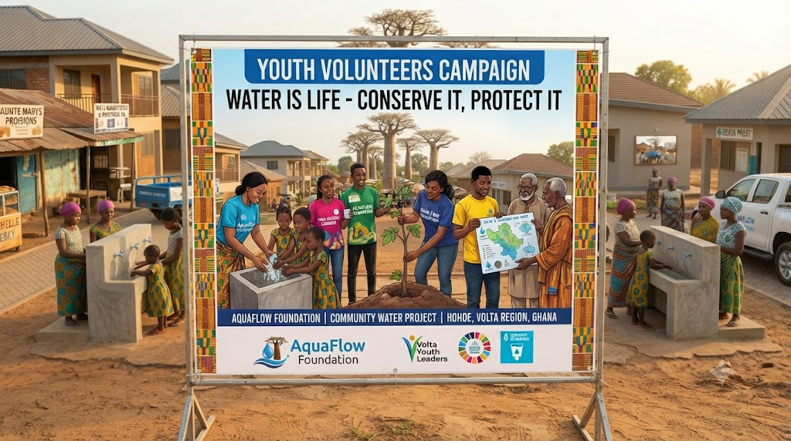
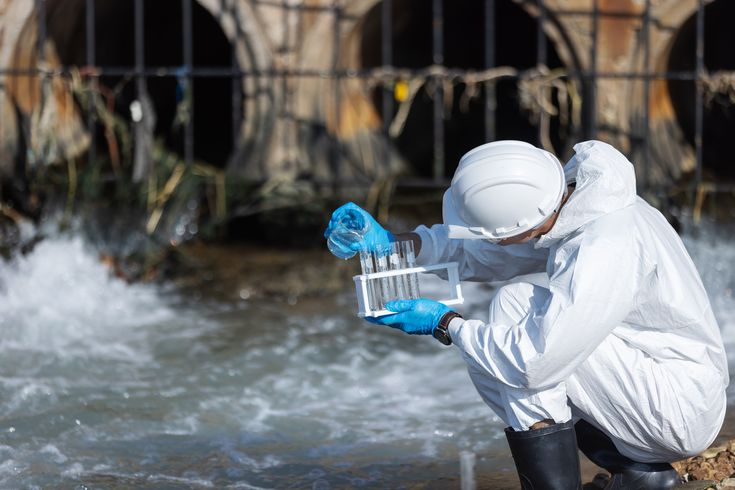
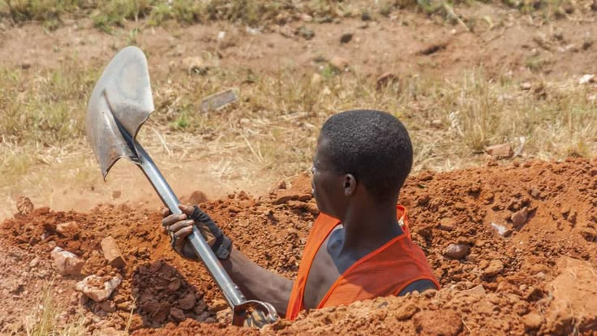
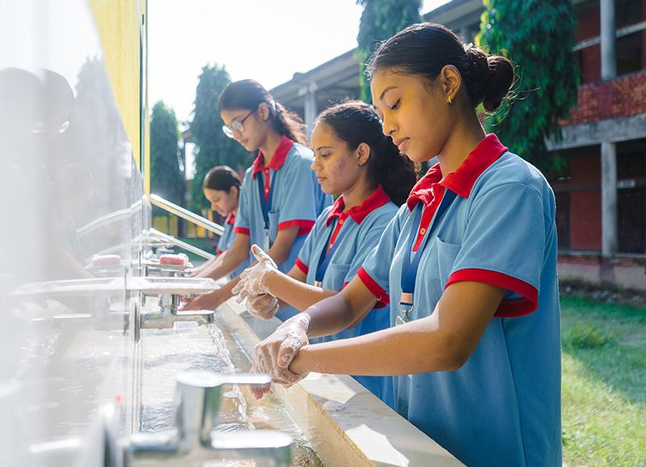
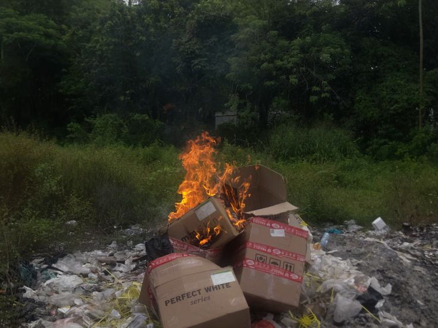
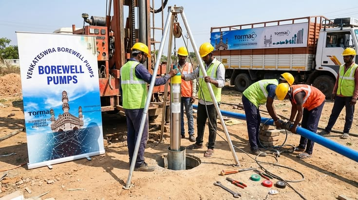

Moments from the field, boreholes going in, communities learning, and clean water reaching families across Ghana.
A snapshot of AquaFlow Foundation's work across the Ashanti, Northern, Volta, and Central regions.









